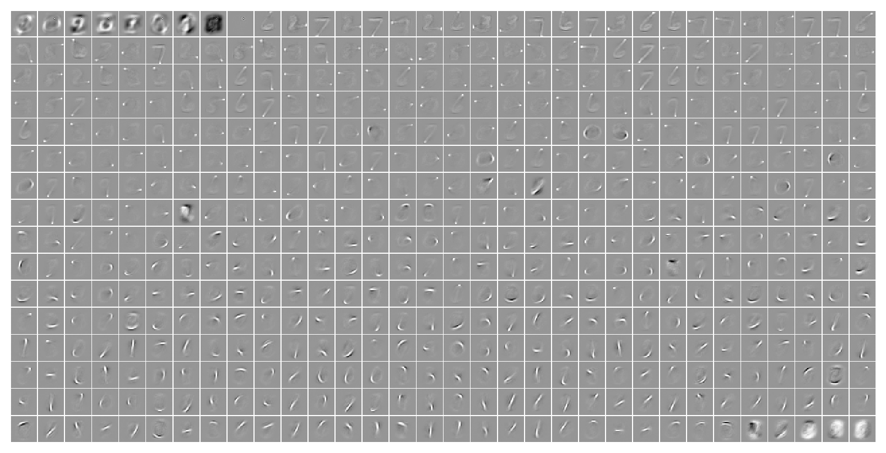
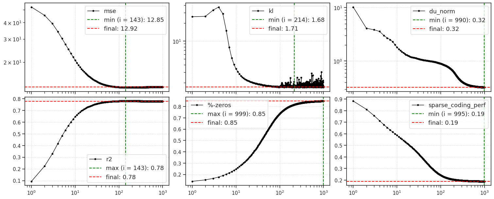
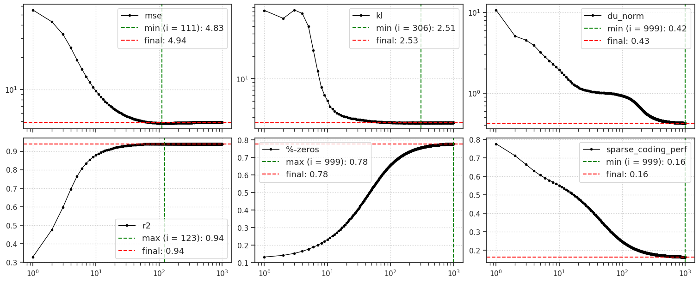
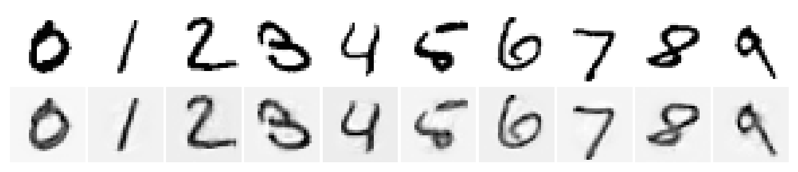
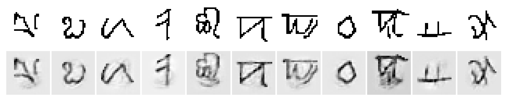
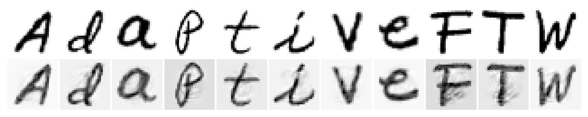

(09) iP-VAE OOD tests#
device_idx = 0
device = f'cuda:{device_idx}'
Load iterative VAEs#
from base.utils_model import load_model_lite
checkpoints_dir = 'Dropbox/git/IterativeVAE' # base directory for the project (update to match yours)
checkpoints_dir = add_home(f"{checkpoints_dir}/checkpoints/") # contains model checkpoints|
print(sorted(
os.listdir(checkpoints_dir),
key=alphanum_sort_key,
))
[ 'gaussian+relu_<grad|lin>_vH16-wht_t-16_b-8_k-[512]', 'gaussian_<grad|lin>_vH16-wht_t-16_b-8_k-[512]', 'poisson_<grad|lin>_MNIST_t-16_b-12_k-[512]', 'poisson_<grad|lin>_MNIST_t-64_b-24_k-[512]', 'poisson_<grad|lin>_vH16-wht_t-16_b-24_k-[512]' ]
f = 'poisson_<grad|lin>_MNIST_t-64_b-24_k-[512]'
tr = load_model_lite(pjoin(checkpoints_dir, f), device=device, verbose=True)[0]
print(tr.model.layer)
# params: 403.2 K
PoissonLayer(input_dim=784, latent_dim=512, temperature=0.01, beta_inner=1, eps=1)
tr.model.print()
+-------------+------------+ | Module Name | Num Params | +-------------+------------+ | IPVAE | 403.2 K | | ——— | ——— | | layer | 403.2 K | +-------------+------------+
Plot dictionary \(\Phi\)#
Learned decoder weights.
# extract features (we need posterior membrane potentials to sort neurons)
output = tr.xtract_ftr('vld', data_batch_sz=9_000, n_data_batches=-1)
# final membrane potentials averaged over the entire test set
u_final = output['state'][:, -1].mean(0)
# order neurons
order = np.argsort(u_final)
# plot
fig, _ = tr.model.show(order=order, method='abs-max')
100%|███████████████████████████████████| 2/2 [00:09<00:00, 4.88s/it]

OOD results#
from base.dataset import make_dataloader
Omniglot#
trn, vld = make_dataloader('Omniglot', device)
print(f"Train:\t{trn.dataset.tensors[0].shape}\nValid:\t{vld.dataset.tensors[0].shape}")
Train: torch.Size([19280, 1, 28, 28]) Valid: torch.Size([13180, 1, 28, 28])
OOD: MNIST -> Omni#
%%time
t_test = 1_000
num_samples = len(vld.dataset.tensors[0])
output = tr.analysis(
dl=vld,
data_batch_sz=int(num_samples / 2),
n_data_batches=-1, # full validation set
t_total=t_test,
)
100%|███████████████████████████████████| 2/2 [00:24<00:00, 12.39s/it]
CPU times: user 54.2 s, sys: 9.88 s, total: 1min 4s
Wall time: 1min 4s
fig, axes = plot_convergence(output, color='k')

list(output)
['kl',
'r2',
'mse',
'nelbo',
'du_norm',
'lifetime',
'population',
'%-zeros',
'sparse_coding_perf',
'state_final',
'samples_final']
EMNIST#
trn, vld = make_dataloader('EMNIST', device)
print(f"Train:\t{trn.dataset.tensors[0].shape}\nValid:\t{vld.dataset.tensors[0].shape}")
Train: torch.Size([124800, 1, 28, 28]) Valid: torch.Size([20800, 1, 28, 28])
OOD: MNIST -> EMNIST#
%%time
t_test = 1_000
num_samples = len(vld.dataset.tensors[0])
output = tr.analysis(
dl=vld,
data_batch_sz=int(num_samples / 2),
n_data_batches=-1, # full validation set
t_total=t_test,
)
100%|███████████████████████████████████| 2/2 [00:33<00:00, 16.52s/it]
CPU times: user 1min 27s, sys: 13.7 s, total: 1min 40s
Wall time: 1min 34s
fig, axes = plot_convergence(output, color='k')

Plot some of the recons#
dataset_inds = {
#
'MNIST': np.asarray([3, 2, 1, 18, 4, 8, 11, 0, 61, 7]),
#
'Omniglot': np.asarray([12710, 5616, 2649, 370, 8713, 9519, 9638, 6146, 9675, 8900, 12934]),
#
'EMNIST': np.asarray([1, 2603, 213, 12173, 15308, 6946, 17063, 3510, 4638, 15626, 18359]),
}
t_total = 1_000
tr.model.eval()
for name, inds in dataset_inds.items():
x = make_dataset(name, device=device)[1]
x = x.tensors[0][inds]
# get online datafeeder
feeder = tr.get_feeder(
x, seed=tr.model.cfg.seed)
for t in range(t_total):
tr.model.update_time(t)
output = tr.model.xtract_ftr(
feeder[t], return_extras='recon')
print(f"train: MNIST --> test: {name}")
x2p = torch.cat([x, output['recon'].reshape(x.shape)])
fig, axes = plot_weights(x2p, nrows=2, cmap='Greys', method='min-max')
plt.show()
print('-' * 100)
print('\n\n\n')
train: MNIST --> test: MNIST

----------------------------------------------------------------------------------------------------
train: MNIST --> test: Omniglot

----------------------------------------------------------------------------------------------------
train: MNIST --> test: EMNIST

----------------------------------------------------------------------------------------------------